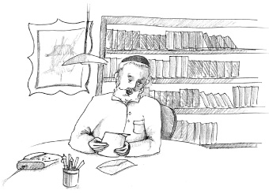

Who Will Take the Sins?
R’ Einhorn turned white. This was certainly not the answer he expected. That he should take all the murders and crimes this lowly man had committed upon himself? With a burden like that on his shoulders, his life was no life!

Sveta moved to the Holy Land from Russia. Her husband remained behind. Her husband was a tough man and had even been appointed to a senior position in the KGB (the Russian secret police). It would be better not to write of the terrible things her husband did as an employee of this terrible police force.
Before Sveta moved to Eretz Yisroel, her husband swore he would never give her a get – a proper Jewish divorce. Nevertheless, she yearned to leave Russia and move to Eretz Yisroel. Despite knowing that she would have to remain alone for the rest of her life, she packed her belongings and left.
Her sad situation became known to the Israeli rabbinate. One of their employees who helped release agunos was R’ Dovid Einhorn. R’ Einhorn had learned in Tomchei T’mimim – 770 and he was shown special favor by the Rebbe.
It is important to know that releasing agunos is no simple matter. There are husbands who run away, leave the country, change their names, and disappear in the big, wide world out there. There are also situations in which they are found but they still refuse to give a get. R’ Einhorn took these projects on as a holy mission and with Hashem’s help he often managed to release agunos and enabled them to remarry.
This time, in Sveta’s situation, R’ Einhorn knew that it wasn’t at all simple. If it had been another country, he could have asked for help from Jewish organizations, requesting that they locate the husband and urge him to give a get. But in Russia of that time, when it was still dangerous to get involved in Jewish matters, the rabbis were afraid to ask for assistance from Jewish organizations. They were afraid to harm the Jews living there.
For a long time Sveta’s file remained open since the rabbis themselves did not know what to do. Then one day, R’ Einhorn received surprisingly good news in his office. A letter! A letter from a rabbi in Moscow. What was in the letter? News! Sveta’s husband agreed to give a get! R’ Einhorn was thrilled. What a surprise! Nobody thought he would offer to do so on his own.
However, the letter notified Sveta that her husband had agreed to give the get on condition. If she agreed to the condition, fine; otherwise, no get. What was the condition? The husband demanded that his wife accept upon herself, in front of ten Jews, all the sins he committed throughout his life. It seems that despite his wickedness, his conscience bothered him about the pain he had inflicted. His Jewish spark was still burning and he sought a way to do t’shuva, but on his wife’s account.
“I don’t think that will be a problem,” said R’ Einhorn to his fellow rabbis. “Sveta doesn’t know anything about Judaism. Torah and mitzvos don’t interest her. I believe this matter will be readily settled.”
When Sveta received the phone call from the rabbinate with the news about the get, she was overjoyed. But she was still unaware of the condition. At the appointed time she stood before the rabbinical court where there were ten Jews. They happily told her about the letter that had been received and mentioned, by the way, the “small” condition her husband made.
“What?!” she shrieked. “I should take upon myself all the sins he committed? Do you know what kind of person he is? Do you know how many people he killed, what terrible crimes he did? You want me to take all this upon myself?! And you thought I would agree to this condition? I will die an aguna and will not take the sins of this despicable person!”
The rabbis exchanged glances and wondered what to do next.
R’ Einhorn knew what to do in a situation like this. There was just one person to turn to, the Rebbe. He quickly called the Rebbe’s office and described the situation. The Rebbe’s answer was: Tell the woman to take his sins upon herself and then you, R’ Einhorn, take the sins from her.
R’ Einhorn turned white. This was certainly not the answer he expected. That he should take all the murders and crimes this lowly man had committed upon himself? With a burden like that on his shoulders, his life was no life!
R’ Einhorn was very shaken up by this answer from the Rebbe and tried to plead with R’ Groner, the Rebbe’s secretary, but R’ Groner said, “This is the Rebbe’s answer. You can’t ask again. What the Rebbe says, goes!”
Having no choice, R’ Einhorn did as he was told. When the woman heard that the rabbi would take the sins from her, she had no problem agreeing. The get was arranged and the woman was released from her marriage. She returned home happily, hoping to remarry.
R’ Einhorn returned home in a highly disturbed frame of mind. A sack full of terrible sins weighed upon him. How would he find peace for his soul?
He entered Shabbos in low spirits. He was bereft of all joy. He could not sleep. He felt he could not handle what he had gone through. On Motzaei Shabbos he decided he must go and see the Rebbe.
Without much delay and preparations he ordered a ticket for that day. He took a small suitcase and boarded a plane for New York. He hoped to find consolation upon seeing the Rebbe’s face.
Sunday morning, when he stood before the Rebbe on line for dollars, the Rebbe asked him, “Can I take half the sins that you took?”
R’ Einhorn was thunderstruck. In a flash, all his distressed feelings left him and his heart filled with joy; joy over the z’chus of helping a Jewish woman, joy in being the Rebbe’s shliach.
Beis Moshiach (staff). "Who Will Take the Sins?." Beis Moshiach, no. 909 (December 30, 2013).